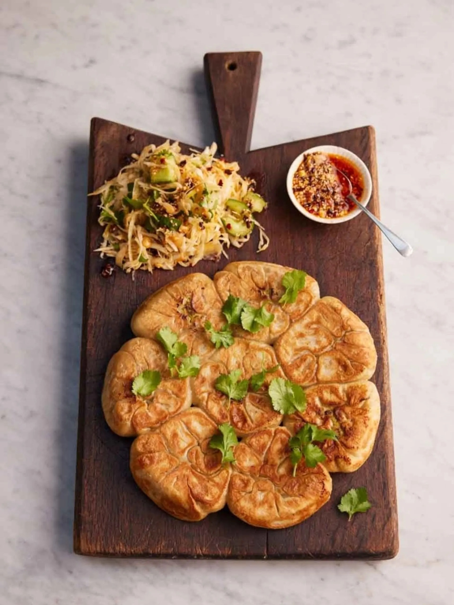

Home
Stuffed Pancakes

Description:
These stuffed pancakes are filled with a savory fish mixture, pan-fried for a golden, crispy exterior.
Paired with a fresh salad and topped with homemade chili oil and balsamic reduction, they offer a satisfying blend of flavors and textures.
A perfect dish for a comforting meal.
They are perfect for a cozy dinner or as a crowd-pleasing dish at a casual gathering.
They’re also ideal for a weekend meal or special occasions like a family celebration, providing both comfort and flavor.
Serve them with a refreshing salad to balance out the richness of the pancakes.
Ingredients:
- 450g strong bread flour, plus extra for dusting
- 1 bunch of fresh coriander (30g)
- 4 spring onions
- 1/2 a white cabbage
- 1 clove of garlic
- 300g frozen fish pie mix, from sustainable sources
- 1 tbsp cornflour
- 1 Cucumber
- Red wine vinegar
- 125ml balsamic vinegar
- Chili oil
- 150ml vegetable oil
- 1 tsp paprika
- 1 tbsp chilli flakes
- 2 tsp Szechuan peppercorns
- 35g unsalted peanuts
- 1 tbsp sesame seeds
- 3 cloves of garlic
Steps:
- Place the flour and 225ml of water in a food processor and blitz to form a smooth,
supple dough (you could also do this by hand in a bowl). Tip onto a clean work surface
and knead it until smooth and elastic, then wrap in greaseproof paper and leave to rest
in the fridge for 30 minutes while you crack on with the filling.
- Clean the bowl of the food processor, then roughly chop and add the coriander stalks
(reserving the leaves). Trim, roughly chop and add the spring onions, along with ¼ of the cabbage,
and peel and add the garlic. Tip in the frozen fish pie mix, along with the cornflour and a pinch of sea salt,
then pulse to form a mince-like mixture.
- Dust a clean surface with flour and cut the dough into 8, then roll out each piece into a 10cm-wide disc.
- Shape the filling into 8 thick patties, then, one at a time, pop the filling into the centre of each dough disc.
Pat it flat with your fingers, then slowly stretch the edges of the dough out, folding them back in over the fish mixture.
Do this all the way round and, once closed, press down on the stuffed pancake with your hand. It should be about 2.5cm thick and 8cm across.
- Place a large non-stick frying pan on a medium-low heat with a tiny drizzle of oil. Lay each pancake into the pan folded-side down and cook
uncovered for 3 minutes, then add 150ml of water, cover with a lid and cook for 12 minutes. Turn up the heat and cook for a further 3 to 4 minutes,
or until golden and crisp, then carefully turn out onto a large board.
- For the chilli oil, heat the vegetable oil in a small saucepan over a high heat until smoking. Pound together the paprika,
chilli flakes and Szechuan peppercorns in a pestle and mortar. Add the peanuts and sesame seeds, peel and add the garlic,
then lightly bash until combined. Carefully pour over the hot oil (it will bubble) and gently muddle together.
Leave to cool completely and store in an airtight container in the fridge for up to 5 days.
- Speed-peel the remaining cabbage into a large bowl. Use the heel of your hand to squash along the length of the cucumber,
then roughly chop it and add to the bowl (or bash with a rolling pin to break it into small pieces). Add a pinch of sea salt,
2 tablespoons of red wine vinegar and half of the reserved coriander leaves and scrunch together. Toss with 2 tablespoons of the chilli oil.
- Pour the balsamic vinegar into the saucepan and place on a medium-high heat until sizzling and reduced.
- Scatter the remaining coriander over the stuffed pancakes and serve with the cabbage and cucumber salad,
along with the balsamic reduction and chilli oil, for drizzling.